色でレーザーの動きが変わります。黒が彫刻、赤や青がカットで、赤、青の順番にカットされる。RGBで作る。 赤青のカット線の太さは0.001ptに。
黒は「000000」
赤は「ff0000」
青は「0000ff」
火災の原因になる素材の注意...塩ビ、合皮、反射するもの...etc
tro tec は集塵機は勝手につく
機械に体重をかけてはいけない
ノギスで切断するものの厚みを正確に計ること
アルミのハニカム台は焦げやすいので何度もレザーが当たアないようなデータを作ること
電源の入れ方は鍵を指して回すだけ「ピーッピピピ ピーッ」となったら蓋を開けていい 材料を左上に置いてヘッドを材料の上のわかりやすい部分に持っていきます。 下の写真の手に持たれている焦点合わせ軸でレーザーの発射するヘッドと材料との距離を一定に測りきめます。 2枚目の写真のようにヘッドに焦点合わせ軸をかけ、台を少しずつ近づけ 3枚目のように焦点合わせ軸が材料に少し当たって倒れるまでハニカム台をあげましょう。
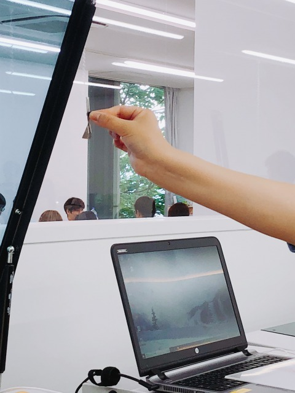 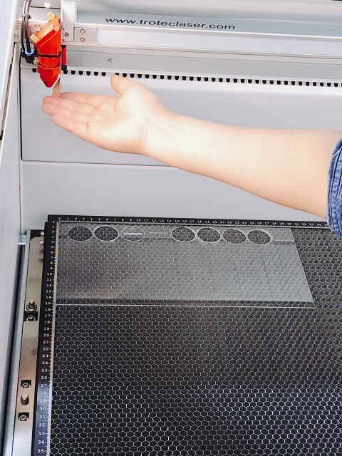 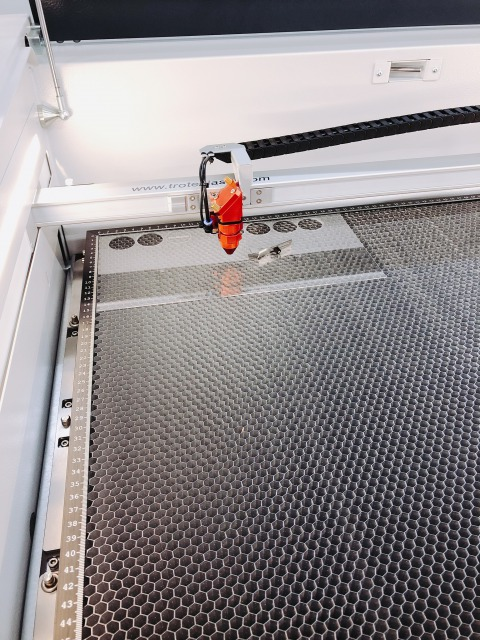お試しで初めに作ったもの 文字のフォントを決めてパス化した後、丸と文字の重なった部分をパスファインダーで抜き取ったもの。
 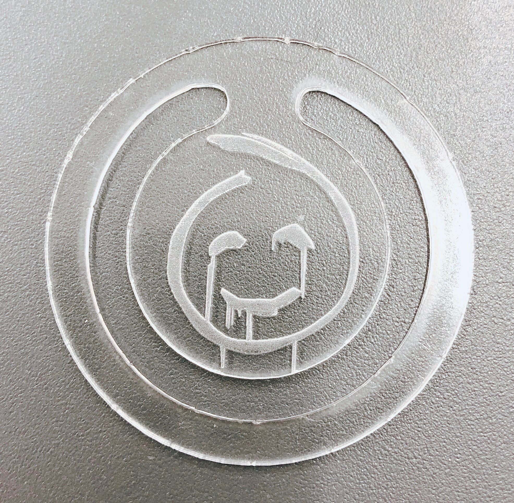
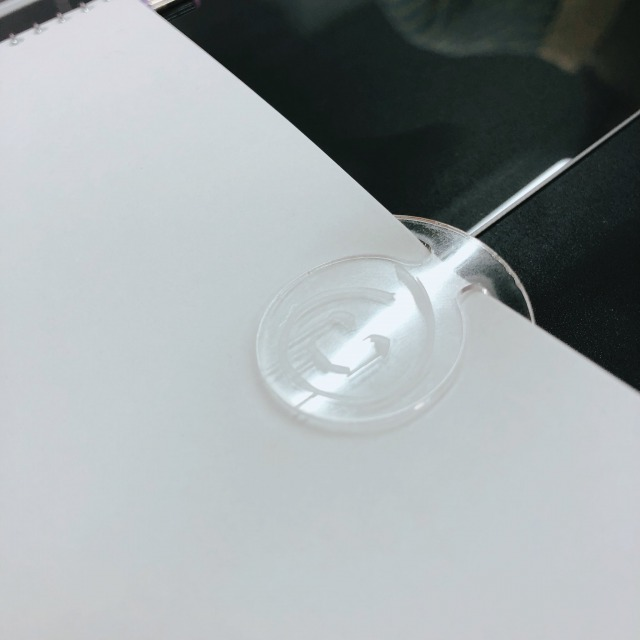
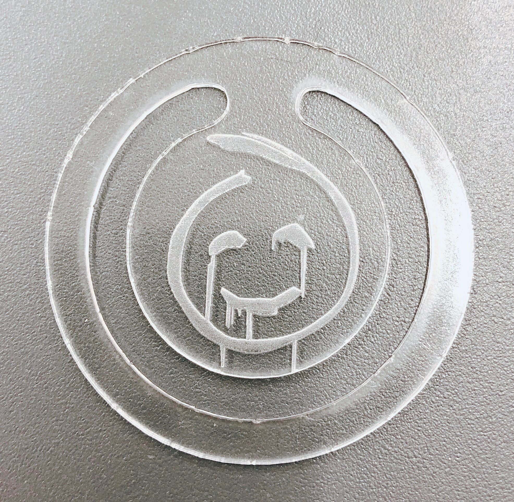
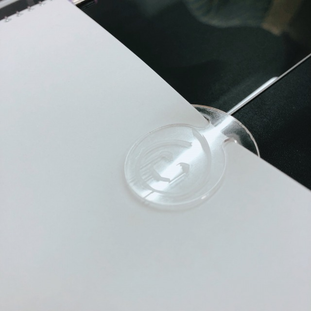
ドラマ、メンタリストの連続殺人鬼レッドジョンのマーク
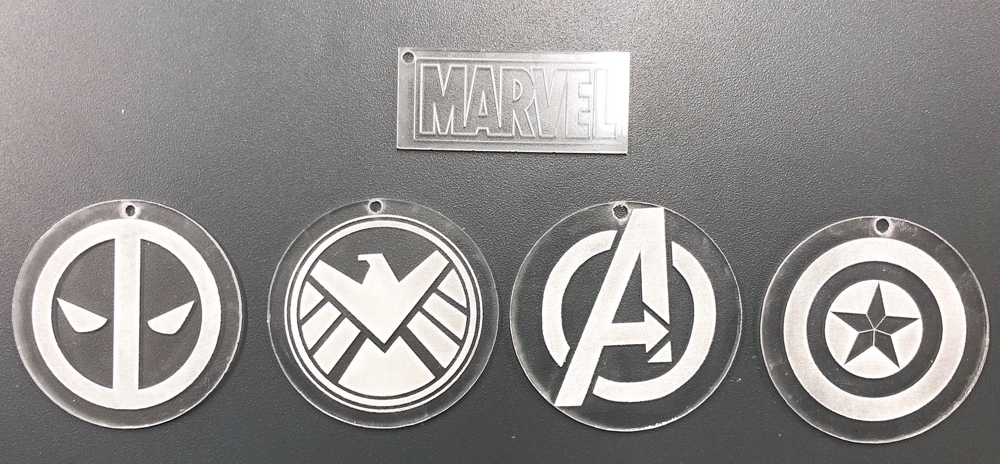一番上はMARVELのロゴ、左から...デッドプール、シールド、アベンジャーズ、キャプテンアメリカ
こっちの機械はtro tecとは違い集塵機は勝手につかないのでそれ以外の使い方はほぼ一緒
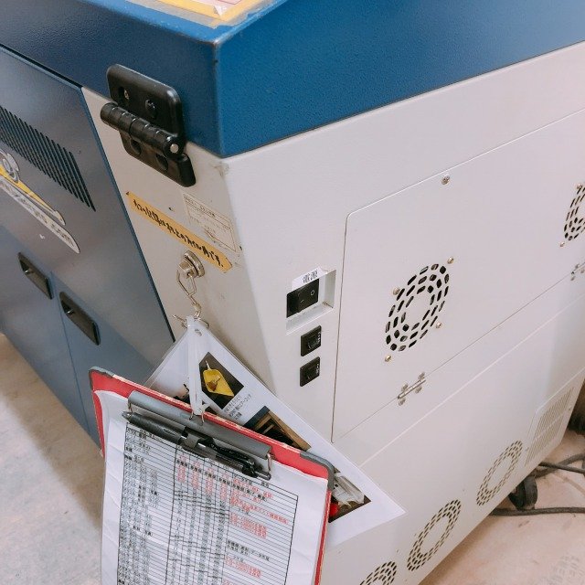写真中央の電源を入れる
下の写真3枚のようにすれば集塵機が作動したことになります。
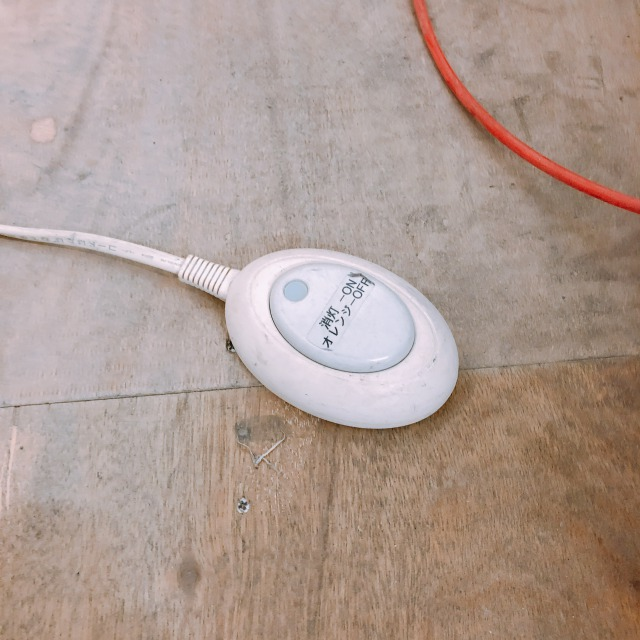 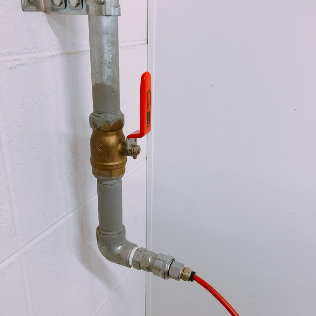 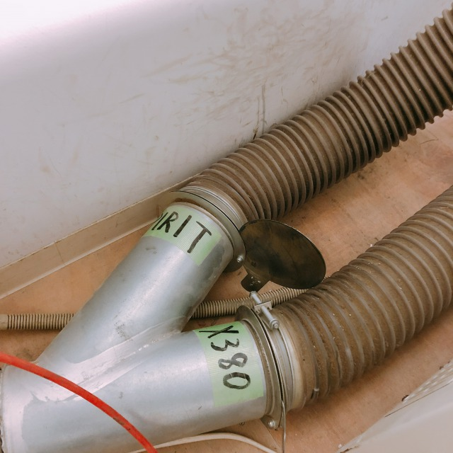焦点合わせ軸は機械の内側奥に入っている。この焦点合わせ軸は少し動くぐらいが合わせられたことになる
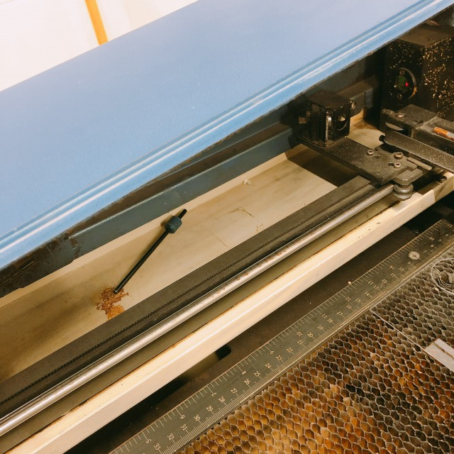 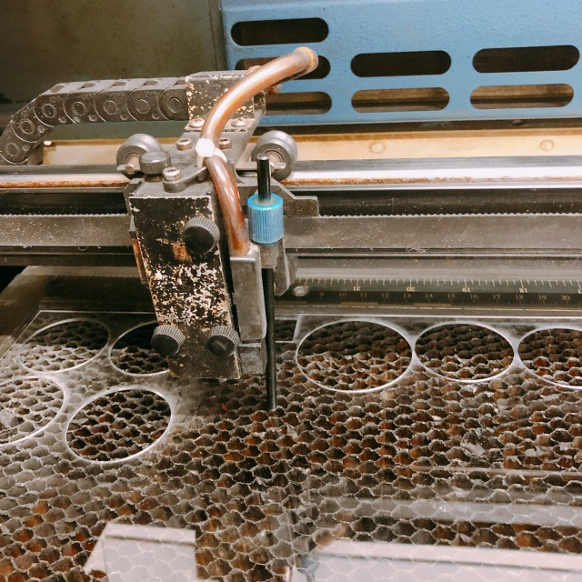これでヘッドを動かしたりハニカム台を動かしたり専用のパソコンで編集した自分の作ったデータをここで選択できます。
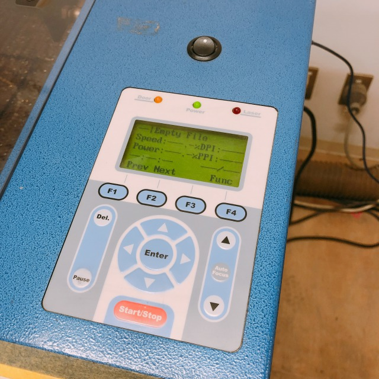作った作品
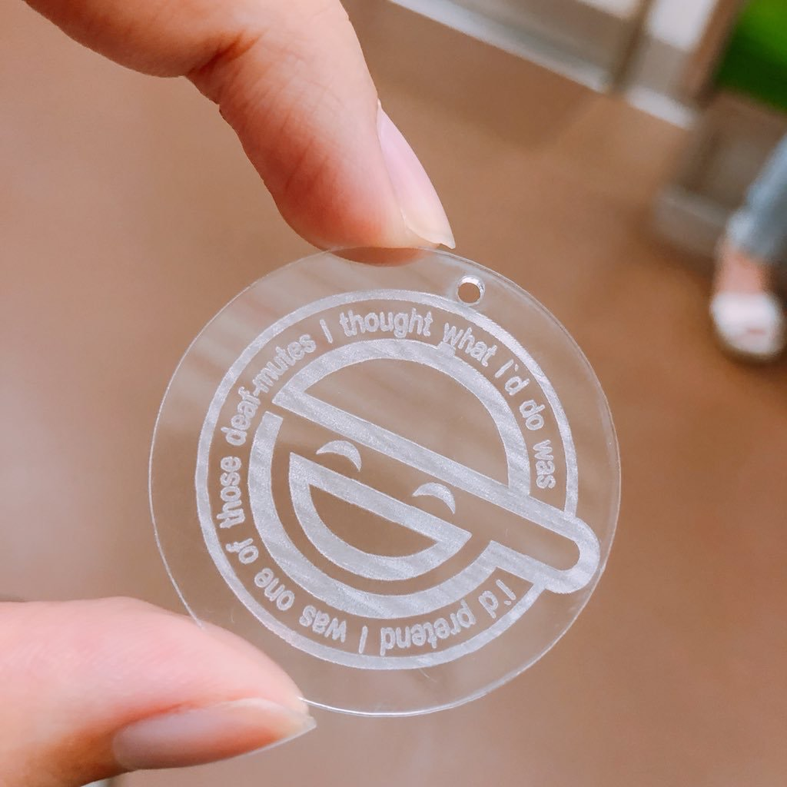 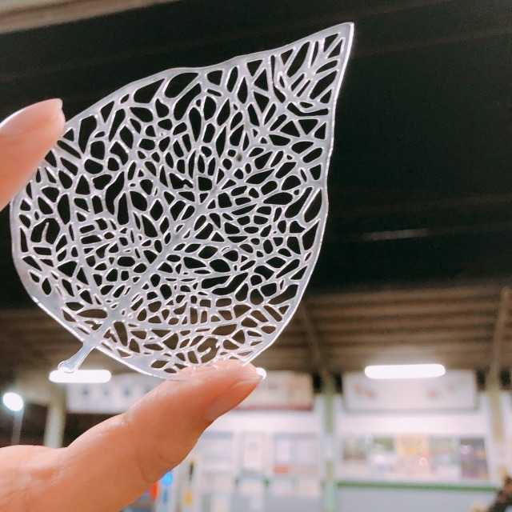